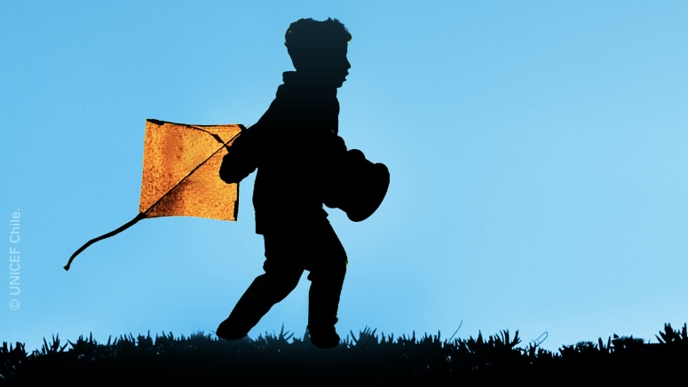

Creación de contenido
Producción de mensajes para múltiples plataformas
Adapto información y mensajes clave para una organizacion sobre temas complejos en contenido atractivo y ajustado a particularidades de una determinada audiencia.
7M+ alcance máximo
Multiplataforma
Producción gráfica y audiovisual
Ejemplo 1 Recursos de educacion digital para cuidadores

Construcción de relato verbal y audiovisual.

Adaptación de información compleja a guías descargables.

Optimización de contenido para generar leads
Contenido destacado

Narración verbal y audiovisual para landing.

Contenido diverso para Instagram

Contenido para email marketing realizado en Mailchimp y Mailjet
Relevancia para Ruuf: Tengo la versatilidad para abordar múltiples formatos y plataformas a través de campañas, contenido always-on y abogacía sobre tópicos de interés.
[AGREGAR: Before/After de workflows, templates, procesos]
Content System Optimization
Optimización de Sistemas de Producción
Implementé workflows, templates y automation que redujeron timeline de producción sin sacrificar calidad, creando systems perfectos para startup scaling.
90% Time Reduction
2 weeks → 1 day
Scalable Templates
Relevancia para Ruuf: Perfect para first marketing hire que necesita build content operations from scratch con maximum efficiency.
Muestras de contenido:
[Templates diseñados]
[Workflow optimizado]
[Sistema de brandbook]
[AGREGAR: Grid de diferentes formatos - posts, reels, carruseles, infografías]
Comunicación y estrategia
Relacionamiento público
Perfilo voces y rostros internos, asimismo realizo colaboraciones con rostros mediaticos de acuerdo a la necesidad de la marca.
Contacto con 7 rostros de medios en 2025
Monitoreo de medios 24/7
Posicionamiento y vocerías
Relevancia para Ruuf: Tengo la capacidad de retomar contactos derivados de mi experiencia previa para evaluar colaboraciones. Asimismo me manejo en el sistema de las agencias y relacionamiento como una forma de impulsar la aparición de Ruuf en el boca a boca.
Muestras de contenido:
[Reels educativos]
[Stories interactivas]
[Campaña multi-canal]